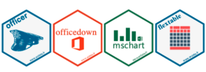
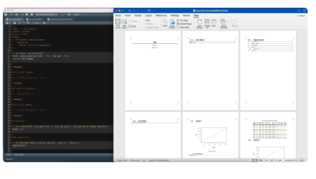
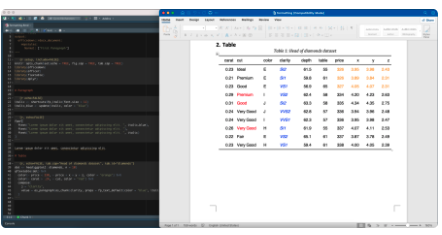
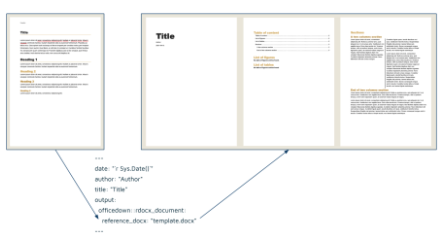
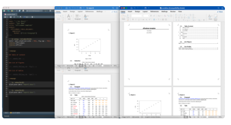

Inleiding
Onlangs kwam ik op R-bloggers een blog tegen waar mijn oog op viel. Hierin werden enkele mogelijkheden van rmarkdown en officedown met elkaar vergeleken. Ik dacht ik zet deze blog eens over als manier om voor en nadelen van beide pakketten te vergelijken. Dank je wel, Jakub.
Accuraatheid, betrouwbaarheid en zichtbaarheid van data staat centraal in het farmaceutische kwaliteitssysteem. Daarvoor zijn er allerlei richlijnen die weer onder controle staan van FDA in Amerika en EMA in Europa.
Goede documentatie hoort daarbij. De eisen die daaraan gesteld worden richten zich op 3 belangrijke gebieden van naleving:
Traceerbaarheid: de mogelijkheid om de hele levenscyclus van het product te traceren, compleet met alle veranderingen. Verantwoordingsplicht:de mogelijkheid om alle personen die bijdragen te identificeren en vast te kunnen stellen wanneer belangrijke wijzigingen zijn doorgevoerd. Gegevensintegriteit:de betrouwbaarheid van de door het systeem gegenereerde gegevens.
Volgens de richtlijnen voor kwaliteit moet elk verslag niet alleen de resultaten en conclusies bevatten, maar ook alle gegevens en gegevensbronnen die zijn gebruikt om ze op te stellen. Daarom is rapportage erg foutgevoelig, vooral als documentatie elke keer met de hand wordt gemaakt op een copy-paste manier. Bovendien kost handmatige rapportage veel tijd en moeite. De invoering van een documentbeheersysteem en programmatisch opgestelde rapporten kunnen deze problemen beperken.
RMarkdown en de eisen
RMarkdown is een bestandsformaat voor het maken van dynamische documenten met R. Onder de motorkap wordt een R Markdown bestand door het knitrpakket verwerkt tot een Markdown document. Het wordt dan verwerkt door Pandoc dat het uiteindelijke document rendert. Zowel Markdown als Pandoc zijn onafhankelijk van de R-omgeving.
RMarkdown bestanden laten je toe om rijke en reproduceerbare documenten te maken. Dit automatiseringselement maakt van R Markdown een krachtig instrument in de handen van klinisch-farmaceutische wetenschappers en technologen.
Voordelen van het gebruik van R Markdown
Met behulp van R Markdown worden uw documenten met voorschriften, zoals klinische onderzoeksrapporten:
Geautomatiseerd: vermijd tijd te besteden aan herhaalbare taken en alledaagse handmatige rapportcreatie. Reproduceerbaar: iedereen kan het rapport regenereren met dezelfde of nieuwe gegevens. Toetsbaar: er kunnen tests worden ingevoerd om te garanderen dat de gegevens geldig zijn of dat de rapportstructuur de richtlijnen volgt. Beschikbaar in meerdere formaten: Word-, PowerPoint-, PDF- en HTML-documenten kunnen gemakkelijk worden aangemaakt. In overeenstemming met kwaliteitseisen: automatiseringsopties omvatten een standaardvereiste om een auteur toe te wijzen aan elk gegenereerd rapport.
Bovendien kunt u RStudio Connect() gebruiken om RMarkdown-bestanden te implementeren met een klik op een knop. De bestanden worden dan automatisch gerenderd en kunnen gemakkelijk worden gedeeld als view-only of downloadables. Zowel render- als toegangsgebeurtenissen kunnen gemonitord en gevolgd worden. Als er een nieuwe versie van de RMarkdown-bestanden beschikbaar is, kunnen ze snel opnieuw worden gegenereerd. Hetzelfde automatische proces kan ook periodiek worden toegepast.
Beperkingen van RMarkdown
Op een bepaald moment kan u gevraagd worden om uw rapporten aan te passen ivm kwaliteitseisen:
- “Maak aub een pagina met informatie over auteur, datum, bronnen, beoordeling. Het moet de eerste pagina van het rapport zijn voor de inhoudsopgave”
- “Pagina 50 moet worden gepresenteerd als een landschap, we moeten alle kolommen met gegevens bevatten en het zal niet passen in portret modus.”
- “Alle veranderlijke gegevens moeten cursief blauw worden geformatteerd, ongeacht of ze in een tabel of in de tekst staan.”
Het kan erg moeilijk worden om aan zulke gedetailleerde richtlijnen te voldoen met RMarkdown, omdat het niet altijd even flexibel is.
Officedown en de eisen
Met het officedown-pakket kunt u de beperkingen van RMarkdown overwinnen, zoals het stylen van specifieke Word elementen. Het is beter geschikt voor het genereren van Office-documenten en biedt meer mogelijkheden voor het maken en opmaken van Microsoft Word- of PowerPoint-documenten.
Officedown bevat enkele van de belangrijkste functies van het officer-pakket, dat speciaal gebouwd is voor het werken met Word en PowerPoint documenten. Onder andere kunt u met officer blokken tekst opmaken, stijlen uit Microsoft Word toepassen en automatisch kruisverwijzingen maken.
Zowel officedown als officer pakketten zijn een onderdeel van een groter officeverse, dat een ecosysteem is van 4 pakketten.

Met mschart kunt u bewerkbare grafieken maken, vergelijkbaar met die in een Excel spreadsheet. De flextable interface is een uiterst handige manier om zeer aanpasbare tabellen te maken.
Wanneer je de kwaliteitseisen de sleutel is tot uw onderzoeks- en ontwikkelingsproces, kunt u officedown gebruiken om uw documentatie workflow te stroomlijnen. De officedown functies die hieronder worden beschreven, pakken enkele van de grootste uitdagingen aan wanneer je wilt voldoen aan Goede Documentatie Praktijken.
Nauwkeurige controle van de documentstructuur
Vanuit een kwaltiteitsperspectief kan het van cruciaal belang zijn dat de documentatie een specifieke volgorde van secties heeft. Met RMarkdown kun je een inhoudsopgave toevoegen, maar je hebt weinig controle over waar die verschijnt. Met pagedown kun je niet alleen een TOC toevoegen, maar ook een lijst van tabellen en een lijst van figuren. Het is echter moeilijk om de volgorde van deze secties te veranderen en het is niet mogelijk om het rapport te exporteren als een Word Document.
Dit is waar officedown om de hoek komt kijken, het geeft je veel meer flexibiliteit. Het helpt je om secties van het rapport precies te plaatsen waar je ze wilt in het document door gebruik te maken van HTML commentaar tags.
Stijl van tekst en tabellen
Het maken van bewerkbare documenten in een onderzoeksomgeving kan extra opmaakopties vereisen. U wilt bijvoorbeeld belangrijke gegevens markeren, of dat nu tekst is of cellen in tabellen. Terwijl de opmaak van tabellen met verschillende pakketten kan worden gedaan, is de opmaak van tekstparagrafen alleen mogelijk met officedown. Door een eenvoudige variabele toe te voegen, kunt u ook de opmaak automatiseren, bijv. de oplichtingskleur in cellen alleen veranderen als de waarde lager of hoger is dan de referentiewaarde.

Stijldocumenten als templates
Met officedown is het mogelijk om stijlen toe te passen die bekend zijn van Microsoft Word. In plaats van eigen CSS-styl te gebruiken, kun je een template .docx bestand maken met daarin gestylde elementen, dat vervolgens wordt doorgegeven aan de YAML header van het RMarkdown bestand. Dezelfde stijlen zullen worden toegepast op onderdelen in het resulterende .docx bestand. Op deze manier zal de aangepaste opmaak die u nodig hebt voor uw GxP-rapporten of -documentatie automatisch worden opgenomen in alle nieuw gegenereerde bestanden.

Meerdere documenten combineren
Wat als u liever een paar kleinere documenten of rapporten maakt en ze later samenvoegt in één bestand? Met officedown kunt u gemakkelijk meerdere documenten samenvoegen tot één. Bovendien blijven alle referenties behouden, terwijl de nummering van secties, figuren en tabellen automatisch wordt bijgewerkt en in een nieuwe inhoudsopgave wordt opgenomen.

Pagina in landschap
Het gebruik van officedown geeft je ook meer flexibiliteit in termen van het veranderen van pagina oriëntatie voor geselecteerde delen van het rapport. Met een enkele opmerking in de code, kunt u de liggende modus toepassen op elk blok in het document. Deze eenvoudige functionaliteit komt zeer goed van pas wanneer u brede tabellen of grotere figuren moet opnemen.

officedown voor betere documentatiemanagement
Met het naleven van de kwaliteitseisen bereikt het automatiseren van het creatieproces en bijwerken van documenten een nieuw niveau in de farmaceutische industrie. Waar handmatige processen en andere pakketten tekort schieten, biedt officedown een levensvatbare oplossing. Het is een eenvoudige en effectieve manier om de functies van Microsoft Word naar R Markdown te brengen en aangepaste opmaakopties te ontsluiten.
Laten we eens samenvatten hoe officedown u kan helpen te voldoen aan de kwaliteitseisen:
- meer controle over document lay-out en structuur
- robuuste opmaak van tekst en tabellen
- globale toepassing van aangepaste stijlen in rapporten
- handige compilatie van meerdere documenten
Deze eigenschappen van officedown vertalen zich in een sterker kwaliteitssysteem, beter risico- en wijzigingsbeheer en nauwkeuriger versiebeheer. Het is een win-win situatie voor zowel uw R&D team als alle mensen die vertrouwen op de kwaliteit van uw medische product om te herstellen of een gezonder leven te leiden.